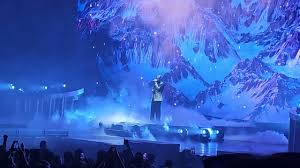

Maes
Né le 10 janvier 1995 à Villepinte, de son vrai nom Walid Georgey, Maes est un rappeur français. Il grandit à Sevran, où il commence le rap à l’âge de 14 ans. Entre 2016 et 2017, il est incarcéré durant quelques mois, pendant lesquels il prépare sa première mixtape Réelle vie. En 2018, il sort sa seconde mixtape Vie Réelle 2.0, et il est repéré et signe chez une filiale de Capitol Music France. En juillet de la même année, il sort son premier single Billets verts. Il s’envole pour Bogota afin de tourner le clip du morceau Madrina avec le rappeur Booba, tiré de son premier album Pure, qui est certifié disque d’or. En 2020, il sort son second album Les derniers Salopards. En décembre 2021, alors qu’il tourne le clip du titre Kalenji en featuring avec ZKR, des voitures sont brûlées, et la piste du règlement de comptes est envisagée. L’année d’après, en décembre 2022 son manager Batzo est abattu dans sa voiture.
Actualités
Dernières nouvelles de Maes :
Sortie de son dernier album "la vie continue" le mois dernier
Annonce d'une tournée en 2024 dans toute la France
Réalisations
Voici quelques-unes des réalisations majeures de Maes :
Album "la vie continue" (2019) – Un des plus gros succès de l'année + disque d'or
Album "OMERTA" (2023) – Succès critique et commercial
Collaboration avec Ninho, Booba, et d'autres artistes célèbres
Événements
Événements à venir :
Tournée "Loup Noir" en 2025 - Dates à venir
Concert spécial à Paris bercy - décembre 2024
Photos
Vidéos
Suivez Maes
Retrouvez Maes sur ses réseaux sociaux :